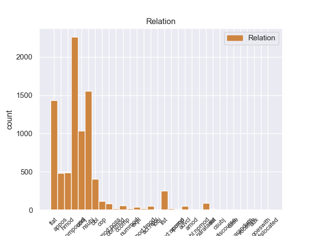
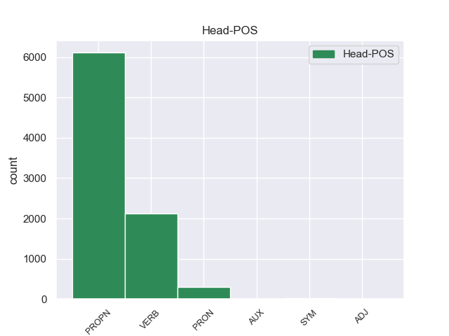
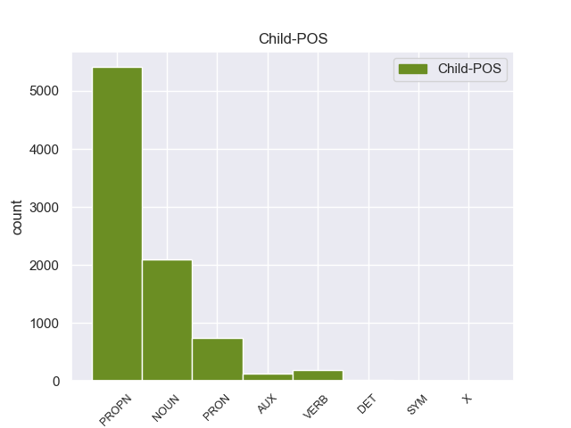

Distribution of features within this leaf



Agreement Rules sorted by frequency.
- When the dependent token is the compound(compound) of the head token, and the head token is PROPN
1 After _ _ _ _ 0 _ _ _
2 happily _ _ _ _ 0 _ _ _
3 visiting _ _ _ _ 0 _ _ _
4 Sear's Sears PROPN NNP Number=Sing|Typo=Yes 5 compound 5:compound _
5 Automotives Automotives PROPN NNP Number=Sing 0 _ _ _
6 in _ _ _ _ 0 _ _ _
7 the _ _ _ _ 0 _ _ _
8 past _ _ _ _ 0 _ _ _
9 , _ _ _ _ 0 _ _ _
10 I _ _ _ _ 0 _ _ _
11 was _ _ _ _ 0 _ _ _
12 shocked _ _ _ _ 0 _ _ _
13 at _ _ _ _ 0 _ _ _
14 the _ _ _ _ 0 _ _ _
15 horrible _ _ _ _ 0 _ _ _
16 service _ _ _ _ 0 _ _ _
17 received _ _ _ _ 0 _ _ _
18 at _ _ _ _ 0 _ _ _
19 their _ _ _ _ 0 _ _ _
20 Greensboro _ _ _ _ 0 _ _ _
21 location _ _ _ _ 0 _ _ _
22 . _ _ _ _ 0 _ _ _
1 I _ _ _ _ 0 _ _ _
2 am _ _ _ _ 0 _ _ _
3 not _ _ _ _ 0 _ _ _
4 sure _ _ _ _ 0 _ _ _
5 about _ _ _ _ 0 _ _ _
6 the _ _ _ _ 0 _ _ _
7 quality _ _ _ _ 0 _ _ _
8 of _ _ _ _ 0 _ _ _
9 the _ _ _ _ 0 _ _ _
10 other _ _ _ _ 0 _ _ _
11 doctors _ _ _ _ 0 _ _ _
12 there _ _ _ _ 0 _ _ _
13 , _ _ _ _ 0 _ _ _
14 but _ _ _ _ 0 _ _ _
15 i _ _ _ _ 0 _ _ _
16 do _ _ _ _ 0 _ _ _
17 know _ _ _ _ 0 _ _ _
18 from _ _ _ _ 0 _ _ _
19 personal _ _ _ _ 0 _ _ _
20 experience _ _ _ _ 0 _ _ _
21 that _ _ _ _ 0 _ _ _
22 Dr. Dr. PROPN NNP Number=Sing 0 _ _ _
23 Christopher _ _ _ _ 0 _ _ _
24 T. _ _ _ _ 0 _ _ _
25 Strzalka Strzalka PROPN NNP Number=Sing 22 flat 22:flat _
26 is _ _ _ _ 0 _ _ _
27 not _ _ _ _ 0 _ _ _
28 a _ _ _ _ 0 _ _ _
29 man _ _ _ _ 0 _ _ _
30 of _ _ _ _ 0 _ _ _
31 his _ _ _ _ 0 _ _ _
32 word _ _ _ _ 0 _ _ _
33 , _ _ _ _ 0 _ _ _
34 and _ _ _ _ 0 _ _ _
35 is _ _ _ _ 0 _ _ _
36 also _ _ _ _ 0 _ _ _
37 very _ _ _ _ 0 _ _ _
38 CRUEL _ _ _ _ 0 _ _ _
39 AND _ _ _ _ 0 _ _ _
40 UNCARING _ _ _ _ 0 _ _ _
41 !! _ _ _ _ 0 _ _ _
1 Unless _ _ _ _ 0 _ _ _
2 you _ _ _ _ 0 _ _ _
3 want _ _ _ _ 0 _ _ _
4 to _ _ _ _ 0 _ _ _
5 take _ _ _ _ 0 _ _ _
6 the _ _ _ _ 0 _ _ _
7 " _ _ _ _ 0 _ _ _
8 tell _ _ _ _ 0 _ _ _
9 the _ _ _ _ 0 _ _ _
10 customer _ _ _ _ 0 _ _ _
11 how _ _ _ _ 0 _ _ _
12 wrong _ _ _ _ 0 _ _ _
13 she she PRON PRP Case=Nom|Gender=Fem|Number=Sing|Person=3|PronType=Prs 14 nsubj 14:nsubj _
14 is be VERB VBZ Mood=Ind|Number=Sing|Person=3|Tense=Pres|VerbForm=Fin 0 _ _ _
15 and _ _ _ _ 0 _ _ _
16 try _ _ _ _ 0 _ _ _
17 and _ _ _ _ 0 _ _ _
18 force _ _ _ _ 0 _ _ _
19 her _ _ _ _ 0 _ _ _
20 into _ _ _ _ 0 _ _ _
21 a _ _ _ _ 0 _ _ _
22 dress _ _ _ _ 0 _ _ _
23 she _ _ _ _ 0 _ _ _
24 's _ _ _ _ 0 _ _ _
25 obviously _ _ _ _ 0 _ _ _
26 not _ _ _ _ 0 _ _ _
27 loving _ _ _ _ 0 _ _ _
28 " _ _ _ _ 0 _ _ _
29 approach _ _ _ _ 0 _ _ _
30 which _ _ _ _ 0 _ _ _
31 will _ _ _ _ 0 _ _ _
32 likely _ _ _ _ 0 _ _ _
33 get _ _ _ _ 0 _ _ _
34 you _ _ _ _ 0 _ _ _
35 ... _ _ _ _ 0 _ _ _
36 uh _ _ _ _ 0 _ _ _
37 ... _ _ _ _ 0 _ _ _
38 nowhere _ _ _ _ 0 _ _ _
39 . _ _ _ _ 0 _ _ _
1 17th _ _ _ _ 0 _ _ _
2 , _ _ _ _ 0 _ _ _
3 like _ _ _ _ 0 _ _ _
4 over _ _ _ _ 0 _ _ _
5 by _ _ _ _ 0 _ _ _
6 16th 16th PROPN NNP Number=Sing 0 _ _ _
7 and _ _ _ _ 0 _ _ _
8 15th 15th PROPN NNP Number=Sing 6 conj 4:obl:by|6:conj:and _
9 YES _ _ _ _ 0 _ _ _
10 , _ _ _ _ 0 _ _ _
11 I _ _ _ _ 0 _ _ _
12 say _ _ _ _ 0 _ _ _
13 , _ _ _ _ 0 _ _ _
14 one _ _ _ _ 0 _ _ _
15 mile _ _ _ _ 0 _ _ _
16 west _ _ _ _ 0 _ _ _
17 of _ _ _ _ 0 _ _ _
18 you _ _ _ _ 0 _ _ _
19 . _ _ _ _ 0 _ _ _
1 My _ _ _ _ 0 _ _ _
2 heart _ _ _ _ 0 _ _ _
3 pounded _ _ _ _ 0 _ _ _
4 as _ _ _ _ 0 _ _ _
5 I _ _ _ _ 0 _ _ _
6 walked _ _ _ _ 0 _ _ _
7 down _ _ _ _ 0 _ _ _
8 and _ _ _ _ 0 _ _ _
9 pounded _ _ _ _ 0 _ _ _
10 even _ _ _ _ 0 _ _ _
11 faster _ _ _ _ 0 _ _ _
12 upon _ _ _ _ 0 _ _ _
13 seeing _ _ _ _ 0 _ _ _
14 Gerry _ _ _ _ 0 _ _ _
15 in _ _ _ _ 0 _ _ _
16 an _ _ _ _ 0 _ _ _
17 SUV SUV PROPN NNP Number=Sing 0 _ _ _
18 - _ _ _ _ 0 _ _ _
19 Lexus Lexus PROPN NNP Number=Sing 17 appos 17:appos SpaceAfter=No
20 ! _ _ _ _ 0 _ _ _
1 Now _ _ _ _ 0 _ _ _
2 , _ _ _ _ 0 _ _ _
3 the _ _ _ _ 0 _ _ _
4 best _ _ _ _ 0 _ _ _
5 of _ _ _ _ 0 _ _ _
6 that _ _ _ _ 0 _ _ _
7 unique _ _ _ _ 0 _ _ _
8 food _ _ _ _ 0 _ _ _
9 comes come VERB VBZ Mood=Ind|Number=Sing|Person=3|Tense=Pres|VerbForm=Fin 0 _ _ _
10 at _ _ _ _ 0 _ _ _
11 the _ _ _ _ 0 _ _ _
12 very _ _ _ _ 0 _ _ _
13 beginning beginning NOUN NN Number=Sing 9 obl 9:obl:at _
14 of _ _ _ _ 0 _ _ _
15 the _ _ _ _ 0 _ _ _
16 meal _ _ _ _ 0 _ _ _
17 . _ _ _ _ 0 _ _ _
1 She _ _ _ _ 0 _ _ _
2 says _ _ _ _ 0 _ _ _
3 , _ _ _ _ 0 _ _ _
4 Is _ _ _ _ 0 _ _ _
5 that _ _ _ _ 0 _ _ _
6 17th 17th PROPN NNP Number=Sing 0 _ _ _
7 like _ _ _ _ 0 _ _ _
8 over _ _ _ _ 0 _ _ _
9 past _ _ _ _ 0 _ _ _
10 broad broad PROPN NNP Number=Sing 6 nmod 6:nmod:past SpaceAfter=No
11 . _ _ _ _ 0 _ _ _
1 We _ _ _ _ 0 _ _ _
2 were _ _ _ _ 0 _ _ _
3 introduced _ _ _ _ 0 _ _ _
4 to _ _ _ _ 0 _ _ _
5 Bistro _ _ _ _ 0 _ _ _
6 Tallulah _ _ _ _ 0 _ _ _
7 by _ _ _ _ 0 _ _ _
8 traveler _ _ _ _ 0 _ _ _
9 - _ _ _ _ 0 _ _ _
10 professional _ _ _ _ 0 _ _ _
11 diner _ _ _ _ 0 _ _ _
12 who _ _ _ _ 0 _ _ _
13 happens _ _ _ _ 0 _ _ _
14 to _ _ _ _ 0 _ _ _
15 own _ _ _ _ 0 _ _ _
16 the _ _ _ _ 0 _ _ _
17 Adelphi _ _ _ _ 0 _ _ _
18 Hotel _ _ _ _ 0 _ _ _
19 and _ _ _ _ 0 _ _ _
20 travels _ _ _ _ 0 _ _ _
21 the _ _ _ _ 0 _ _ _
22 world _ _ _ _ 0 _ _ _
23 -- _ _ _ _ 0 _ _ _
24 and _ _ _ _ 0 _ _ _
25 residing _ _ _ _ 0 _ _ _
26 in _ _ _ _ 0 _ _ _
27 Paris Paris PROPN NNP Number=Sing 0 _ _ _
28 , _ _ _ _ 0 _ _ _
29 London _ _ _ _ 0 _ _ _
30 , _ _ _ _ 0 _ _ _
31 New _ _ _ _ 0 _ _ _
32 York York PROPN NNP Number=Sing 27 list 27:list _
33 the _ _ _ _ 0 _ _ _
34 rest _ _ _ _ 0 _ _ _
35 of _ _ _ _ 0 _ _ _
36 the _ _ _ _ 0 _ _ _
37 year _ _ _ _ 0 _ _ _
38 . _ _ _ _ 0 _ _ _
1 Broad Broad PROPN NNP Number=Sing 8 nsubj 8:nsubj SpaceAfter=No
2 , _ _ _ _ 0 _ _ _
3 I _ _ _ _ 0 _ _ _
4 say _ _ _ _ 0 _ _ _
5 , _ _ _ _ 0 _ _ _
6 is _ _ _ _ 0 _ _ _
7 14th _ _ _ _ 0 _ _ _
8 street street PROPN NNP Number=Sing 0 _ _ _
9 and _ _ _ _ 0 _ _ _
10 I _ _ _ _ 0 _ _ _
11 am _ _ _ _ 0 _ _ _
12 3 _ _ _ _ 0 _ _ _
13 blocks _ _ _ _ 0 _ _ _
14 west _ _ _ _ 0 _ _ _
15 of _ _ _ _ 0 _ _ _
16 broad _ _ _ _ 0 _ _ _
17 and _ _ _ _ 0 _ _ _
18 one _ _ _ _ 0 _ _ _
19 south _ _ _ _ 0 _ _ _
20 of _ _ _ _ 0 _ _ _
21 walnut _ _ _ _ 0 _ _ _
22 . _ _ _ _ 0 _ _ _
1 If _ _ _ _ 0 _ _ _
2 you _ _ _ _ 0 _ _ _
3 want _ _ _ _ 0 _ _ _
4 a _ _ _ _ 0 _ _ _
5 doctor _ _ _ _ 0 _ _ _
6 who _ _ _ _ 0 _ _ _
7 will _ _ _ _ 0 _ _ _
8 lie _ _ _ _ 0 _ _ _
9 to _ _ _ _ 0 _ _ _
10 you _ _ _ _ 0 _ _ _
11 and _ _ _ _ 0 _ _ _
12 say _ _ _ _ 0 _ _ _
13 he _ _ _ _ 0 _ _ _
14 will _ _ _ _ 0 _ _ _
15 operate _ _ _ _ 0 _ _ _
16 and _ _ _ _ 0 _ _ _
17 then _ _ _ _ 0 _ _ _
18 change _ _ _ _ 0 _ _ _
19 his _ _ _ _ 0 _ _ _
20 mind _ _ _ _ 0 _ _ _
21 , _ _ _ _ 0 _ _ _
22 and _ _ _ _ 0 _ _ _
23 not _ _ _ _ 0 _ _ _
24 know _ _ _ _ 0 _ _ _
25 what _ _ _ _ 0 _ _ _
26 he _ _ _ _ 0 _ _ _
27 is _ _ _ _ 0 _ _ _
28 talking _ _ _ _ 0 _ _ _
29 about _ _ _ _ 0 _ _ _
30 when _ _ _ _ 0 _ _ _
31 he _ _ _ _ 0 _ _ _
32 recommends recommend VERB VBZ Mood=Ind|Number=Sing|Person=3|Tense=Pres|VerbForm=Fin 0 _ _ _
33 procedures _ _ _ _ 0 _ _ _
34 at _ _ _ _ 0 _ _ _
35 other _ _ _ _ 0 _ _ _
36 hospitals _ _ _ _ 0 _ _ _
37 and _ _ _ _ 0 _ _ _
38 says say VERB VBZ Mood=Ind|Number=Sing|Person=3|Tense=Pres|VerbForm=Fin 32 conj 28:advcl:when|32:conj:and _
39 they _ _ _ _ 0 _ _ _
40 are _ _ _ _ 0 _ _ _
41 what _ _ _ _ 0 _ _ _
42 you _ _ _ _ 0 _ _ _
43 need _ _ _ _ 0 _ _ _
44 , _ _ _ _ 0 _ _ _
45 when _ _ _ _ 0 _ _ _
46 they _ _ _ _ 0 _ _ _
47 will _ _ _ _ 0 _ _ _
48 not _ _ _ _ 0 _ _ _
49 work _ _ _ _ 0 _ _ _
50 for _ _ _ _ 0 _ _ _
51 you _ _ _ _ 0 _ _ _
52 , _ _ _ _ 0 _ _ _
53 go _ _ _ _ 0 _ _ _
54 to _ _ _ _ 0 _ _ _
55 this _ _ _ _ 0 _ _ _
56 doctor _ _ _ _ 0 _ _ _
57 ... _ _ _ _ 0 _ _ _
58 he _ _ _ _ 0 _ _ _
59 is _ _ _ _ 0 _ _ _
60 the _ _ _ _ 0 _ _ _
61 one _ _ _ _ 0 _ _ _
62 for _ _ _ _ 0 _ _ _
63 you _ _ _ _ 0 _ _ _
64 . _ _ _ _ 0 _ _ _
1 On _ _ _ _ 0 _ _ _
2 Monday _ _ _ _ 0 _ _ _
3 I _ _ _ _ 0 _ _ _
4 called _ _ _ _ 0 _ _ _
5 and _ _ _ _ 0 _ _ _
6 again _ _ _ _ 0 _ _ _
7 it _ _ _ _ 0 _ _ _
8 was _ _ _ _ 0 _ _ _
9 a _ _ _ _ 0 _ _ _
10 big _ _ _ _ 0 _ _ _
11 to _ _ _ _ 0 _ _ _
12 - _ _ _ _ 0 _ _ _
13 do _ _ _ _ 0 _ _ _
14 to _ _ _ _ 0 _ _ _
15 find _ _ _ _ 0 _ _ _
16 anyone _ _ _ _ 0 _ _ _
17 who _ _ _ _ 0 _ _ _
18 knew _ _ _ _ 0 _ _ _
19 anything anything PRON NN Number=Sing 0 _ _ _
20 about _ _ _ _ 0 _ _ _
21 it it PRON PRP Case=Acc|Gender=Neut|Number=Sing|Person=3|PronType=Prs 19 nmod 19:nmod:about SpaceAfter=No
22 . _ _ _ _ 0 _ _ _
1 Broad _ _ _ _ 0 _ _ _
2 , _ _ _ _ 0 _ _ _
3 I _ _ _ _ 0 _ _ _
4 say _ _ _ _ 0 _ _ _
5 , _ _ _ _ 0 _ _ _
6 is be AUX VBZ Mood=Ind|Number=Sing|Person=3|Tense=Pres|VerbForm=Fin 8 cop 8:cop _
7 14th _ _ _ _ 0 _ _ _
8 street street PROPN NNP Number=Sing 0 _ _ _
9 and _ _ _ _ 0 _ _ _
10 I _ _ _ _ 0 _ _ _
11 am _ _ _ _ 0 _ _ _
12 3 _ _ _ _ 0 _ _ _
13 blocks _ _ _ _ 0 _ _ _
14 west _ _ _ _ 0 _ _ _
15 of _ _ _ _ 0 _ _ _
16 broad _ _ _ _ 0 _ _ _
17 and _ _ _ _ 0 _ _ _
18 one _ _ _ _ 0 _ _ _
19 south _ _ _ _ 0 _ _ _
20 of _ _ _ _ 0 _ _ _
21 walnut _ _ _ _ 0 _ _ _
22 . _ _ _ _ 0 _ _ _
1 Even _ _ _ _ 0 _ _ _
2 my my PRON PRP$ Number=Sing|Person=1|Poss=Yes|PronType=Prs 3 nmod:poss 3:nmod:poss _
3 PA PA PROPN NNP Number=Sing 0 _ _ _
4 i _ _ _ _ 0 _ _ _
5 went _ _ _ _ 0 _ _ _
6 to _ _ _ _ 0 _ _ _
7 the _ _ _ _ 0 _ _ _
8 other _ _ _ _ 0 _ _ _
9 day _ _ _ _ 0 _ _ _
10 said _ _ _ _ 0 _ _ _
11 " _ _ _ _ 0 _ _ _
12 it _ _ _ _ 0 _ _ _
13 must _ _ _ _ 0 _ _ _
14 by _ _ _ _ 0 _ _ _
15 comforting _ _ _ _ 0 _ _ _
16 to _ _ _ _ 0 _ _ _
17 have _ _ _ _ 0 _ _ _
18 gone _ _ _ _ 0 _ _ _
19 to _ _ _ _ 0 _ _ _
20 a _ _ _ _ 0 _ _ _
21 heart _ _ _ _ 0 _ _ _
22 surgeon _ _ _ _ 0 _ _ _
23 like _ _ _ _ 0 _ _ _
24 him _ _ _ _ 0 _ _ _
25 who _ _ _ _ 0 _ _ _
26 will _ _ _ _ 0 _ _ _
27 do _ _ _ _ 0 _ _ _
28 nothing _ _ _ _ 0 _ _ _
29 for _ _ _ _ 0 _ _ _
30 you _ _ _ _ 0 _ _ _
31 " _ _ _ _ 0 _ _ _
32 . _ _ _ _ 0 _ _ _
1 The _ _ _ _ 0 _ _ _
2 truth _ _ _ _ 0 _ _ _
3 is be VERB VBZ Mood=Ind|Number=Sing|Person=3|Tense=Pres|VerbForm=Fin 0 _ _ _
4 , _ _ _ _ 0 _ _ _
5 in _ _ _ _ 0 _ _ _
6 my _ _ _ _ 0 _ _ _
7 and _ _ _ _ 0 _ _ _
8 my _ _ _ _ 0 _ _ _
9 dining _ _ _ _ 0 _ _ _
10 partners _ _ _ _ 0 _ _ _
11 ' _ _ _ _ 0 _ _ _
12 experience _ _ _ _ 0 _ _ _
13 , _ _ _ _ 0 _ _ _
14 this _ _ _ _ 0 _ _ _
15 is _ _ _ _ 0 _ _ _
16 a _ _ _ _ 0 _ _ _
17 fine _ _ _ _ 0 _ _ _
18 little _ _ _ _ 0 _ _ _
19 restaurant restaurant NOUN NN Number=Sing 3 ccomp 3:ccomp _
20 with _ _ _ _ 0 _ _ _
21 some _ _ _ _ 0 _ _ _
22 unique _ _ _ _ 0 _ _ _
23 food _ _ _ _ 0 _ _ _
24 . _ _ _ _ 0 _ _ _
1 I I PRON PRP Case=Nom|Number=Sing|Person=1|PronType=Prs 0 _ _ _
2 , _ _ _ _ 0 _ _ _
3 nor _ _ _ _ 0 _ _ _
4 anyone anyone PRON NN Number=Sing 1 conj 1:conj:nor|12:nsubj _
5 else _ _ _ _ 0 _ _ _
6 in _ _ _ _ 0 _ _ _
7 my _ _ _ _ 0 _ _ _
8 family _ _ _ _ 0 _ _ _
9 , _ _ _ _ 0 _ _ _
10 will _ _ _ _ 0 _ _ _
11 ever _ _ _ _ 0 _ _ _
12 go _ _ _ _ 0 _ _ _
13 to _ _ _ _ 0 _ _ _
14 Sun _ _ _ _ 0 _ _ _
15 Devil _ _ _ _ 0 _ _ _
16 Auto _ _ _ _ 0 _ _ _
17 again _ _ _ _ 0 _ _ _
18 . _ _ _ _ 0 _ _ _
1 17th 17th PROPN NNP Number=Sing 0 _ _ _
2 , _ _ _ _ 0 _ _ _
3 like _ _ _ _ 0 _ _ _
4 over _ _ _ _ 0 _ _ _
5 by _ _ _ _ 0 _ _ _
6 16th _ _ _ _ 0 _ _ _
7 and _ _ _ _ 0 _ _ _
8 15th _ _ _ _ 0 _ _ _
9 YES _ _ _ _ 0 _ _ _
10 , _ _ _ _ 0 _ _ _
11 I _ _ _ _ 0 _ _ _
12 say _ _ _ _ 0 _ _ _
13 , _ _ _ _ 0 _ _ _
14 one _ _ _ _ 0 _ _ _
15 mile mile NOUN NN Number=Sing 1 parataxis 1:parataxis _
16 west _ _ _ _ 0 _ _ _
17 of _ _ _ _ 0 _ _ _
18 you _ _ _ _ 0 _ _ _
19 . _ _ _ _ 0 _ _ _
1 I _ _ _ _ 0 _ _ _
2 mean _ _ _ _ 0 _ _ _
3 , _ _ _ _ 0 _ _ _
4 I _ _ _ _ 0 _ _ _
5 do _ _ _ _ 0 _ _ _
6 n't _ _ _ _ 0 _ _ _
7 care _ _ _ _ 0 _ _ _
8 if _ _ _ _ 0 _ _ _
9 he _ _ _ _ 0 _ _ _
10 does _ _ _ _ 0 _ _ _
11 n't _ _ _ _ 0 _ _ _
12 know _ _ _ _ 0 _ _ _
13 , _ _ _ _ 0 _ _ _
14 but _ _ _ _ 0 _ _ _
15 if _ _ _ _ 0 _ _ _
16 he _ _ _ _ 0 _ _ _
17 pretends pretend VERB VBZ Mood=Ind|Number=Sing|Person=3|Tense=Pres|VerbForm=Fin 29 advcl 29:advcl:if _
18 to _ _ _ _ 0 _ _ _
19 know _ _ _ _ 0 _ _ _
20 and _ _ _ _ 0 _ _ _
21 tells _ _ _ _ 0 _ _ _
22 me _ _ _ _ 0 _ _ _
23 BS _ _ _ _ 0 _ _ _
24 to _ _ _ _ 0 _ _ _
25 my _ _ _ _ 0 _ _ _
26 face _ _ _ _ 0 _ _ _
27 , _ _ _ _ 0 _ _ _
28 there _ _ _ _ 0 _ _ _
29 's be VERB VBZ Mood=Ind|Number=Sing|Person=3|Tense=Pres|VerbForm=Fin 0 _ _ _
30 no _ _ _ _ 0 _ _ _
31 way _ _ _ _ 0 _ _ _
32 I _ _ _ _ 0 _ _ _
33 'm _ _ _ _ 0 _ _ _
34 going _ _ _ _ 0 _ _ _
35 to _ _ _ _ 0 _ _ _
36 trust _ _ _ _ 0 _ _ _
37 him _ _ _ _ 0 _ _ _
38 when _ _ _ _ 0 _ _ _
39 matters _ _ _ _ 0 _ _ _
40 turn _ _ _ _ 0 _ _ _
41 to _ _ _ _ 0 _ _ _
42 the _ _ _ _ 0 _ _ _
43 price _ _ _ _ 0 _ _ _
44 of _ _ _ _ 0 _ _ _
45 the _ _ _ _ 0 _ _ _
46 car _ _ _ _ 0 _ _ _
47 and _ _ _ _ 0 _ _ _
48 financing _ _ _ _ 0 _ _ _
49 . _ _ _ _ 0 _ _ _
1 Anyhow _ _ _ _ 0 _ _ _
2 , _ _ _ _ 0 _ _ _
3 after _ _ _ _ 0 _ _ _
4 reading _ _ _ _ 0 _ _ _
5 some _ _ _ _ 0 _ _ _
6 of _ _ _ _ 0 _ _ _
7 the _ _ _ _ 0 _ _ _
8 other _ _ _ _ 0 _ _ _
9 reviews _ _ _ _ 0 _ _ _
10 it it PRON PRP Case=Nom|Gender=Neut|Number=Sing|Person=3|PronType=Prs 11 expl 11:expl _
11 seems seem VERB VBZ Mood=Ind|Number=Sing|Person=3|Tense=Pres|VerbForm=Fin 0 _ _ _
12 like _ _ _ _ 0 _ _ _
13 some _ _ _ _ 0 _ _ _
14 of _ _ _ _ 0 _ _ _
15 the _ _ _ _ 0 _ _ _
16 other _ _ _ _ 0 _ _ _
17 reviewers _ _ _ _ 0 _ _ _
18 are _ _ _ _ 0 _ _ _
19 expecting _ _ _ _ 0 _ _ _
20 mircles _ _ _ _ 0 _ _ _
21 . _ _ _ _ 0 _ _ _
1 I _ _ _ _ 0 _ _ _
2 was _ _ _ _ 0 _ _ _
3 born _ _ _ _ 0 _ _ _
4 and _ _ _ _ 0 _ _ _
5 raised _ _ _ _ 0 _ _ _
6 in _ _ _ _ 0 _ _ _
7 Toronto Toronto PROPN NNP Number=Sing 0 _ _ _
8 , _ _ _ _ 0 _ _ _
9 which _ _ _ _ 0 _ _ _
10 has have VERB VBZ Mood=Ind|Number=Sing|Person=3|Tense=Pres|VerbForm=Fin 7 acl:relcl 7:acl:relcl _
11 a _ _ _ _ 0 _ _ _
12 huge _ _ _ _ 0 _ _ _
13 West _ _ _ _ 0 _ _ _
14 Indian _ _ _ _ 0 _ _ _
15 ( _ _ _ _ 0 _ _ _
16 Trinidadian _ _ _ _ 0 _ _ _
17 , _ _ _ _ 0 _ _ _
18 Jamaican _ _ _ _ 0 _ _ _
19 , _ _ _ _ 0 _ _ _
20 etc _ _ _ _ 0 _ _ _
21 ) _ _ _ _ 0 _ _ _
22 population _ _ _ _ 0 _ _ _
23 . _ _ _ _ 0 _ _ _
1 I _ _ _ _ 0 _ _ _
2 WAS _ _ _ _ 0 _ _ _
3 ALSO _ _ _ _ 0 _ _ _
4 THERE _ _ _ _ 0 _ _ _
5 OF _ _ _ _ 0 _ _ _
6 JULY _ _ _ _ 0 _ _ _
7 4TH _ _ _ _ 0 _ _ _
8 2008 _ _ _ _ 0 _ _ _
9 , _ _ _ _ 0 _ _ _
10 WHEN _ _ _ _ 0 _ _ _
11 MY _ _ _ _ 0 _ _ _
12 DAUGHTER _ _ _ _ 0 _ _ _
13 S _ _ _ _ 0 _ _ _
14 BUFFALO _ _ _ _ 0 _ _ _
15 WINGS _ _ _ _ 0 _ _ _
16 CAME _ _ _ _ 0 _ _ _
17 OUT _ _ _ _ 0 _ _ _
18 WITH _ _ _ _ 0 _ _ _
19 A _ _ _ _ 0 _ _ _
20 FLY fly NOUN NN Number=Sing 22 nsubj 22:nsubj _
21 ON _ _ _ _ 0 _ _ _
22 IT it PRON PRP Case=Nom|Gender=Neut|Number=Sing|Person=3|PronType=Prs 0 _ _ _
23 . _ _ _ _ 0 _ _ _
1 When _ _ _ _ 0 _ _ _
2 having _ _ _ _ 0 _ _ _
3 your _ _ _ _ 0 _ _ _
4 car _ _ _ _ 0 _ _ _
5 worked _ _ _ _ 0 _ _ _
6 on _ _ _ _ 0 _ _ _
7 you _ _ _ _ 0 _ _ _
8 have _ _ _ _ 0 _ _ _
9 to _ _ _ _ 0 _ _ _
10 trust _ _ _ _ 0 _ _ _
11 the _ _ _ _ 0 _ _ _
12 mechanic _ _ _ _ 0 _ _ _
13 & _ _ _ _ 0 _ _ _
14 this _ _ _ _ 0 _ _ _
15 Midas _ _ _ _ 0 _ _ _
16 is be AUX VBZ Mood=Ind|Number=Sing|Person=3|Tense=Pres|VerbForm=Fin 18 cop 18:cop _
17 truly _ _ _ _ 0 _ _ _
18 someone someone PRON NN Number=Sing 0 _ _ _
19 you _ _ _ _ 0 _ _ _
20 can _ _ _ _ 0 _ _ _
21 trust _ _ _ _ 0 _ _ _
22 ! _ _ _ _ 0 _ _ _
1 He _ _ _ _ 0 _ _ _
2 gives give VERB VBZ Mood=Ind|Number=Sing|Person=3|Tense=Pres|VerbForm=Fin 0 _ _ _
3 the _ _ _ _ 0 _ _ _
4 phone _ _ _ _ 0 _ _ _
5 to _ _ _ _ 0 _ _ _
6 a _ _ _ _ 0 _ _ _
7 girl _ _ _ _ 0 _ _ _
8 , _ _ _ _ 0 _ _ _
9 she _ _ _ _ 0 _ _ _
10 says _ _ _ _ 0 _ _ _
11 , _ _ _ _ 0 _ _ _
12 I _ _ _ _ 0 _ _ _
13 have _ _ _ _ 0 _ _ _
14 to _ _ _ _ 0 _ _ _
15 have _ _ _ _ 0 _ _ _
16 your _ _ _ _ 0 _ _ _
17 address _ _ _ _ 0 _ _ _
18 , _ _ _ _ 0 _ _ _
19 I _ _ _ _ 0 _ _ _
20 say _ _ _ _ 0 _ _ _
21 , _ _ _ _ 0 _ _ _
22 do _ _ _ _ 0 _ _ _
23 you _ _ _ _ 0 _ _ _
24 deliver _ _ _ _ 0 _ _ _
25 to _ _ _ _ 0 _ _ _
26 17th _ _ _ _ 0 _ _ _
27 and _ _ _ _ 0 _ _ _
28 locust _ _ _ _ 0 _ _ _
29 , _ _ _ _ 0 _ _ _
30 she _ _ _ _ 0 _ _ _
31 says _ _ _ _ 0 _ _ _
32 , _ _ _ _ 0 _ _ _
33 your _ _ _ _ 0 _ _ _
34 exact _ _ _ _ 0 _ _ _
35 address _ _ _ _ 0 _ _ _
36 , _ _ _ _ 0 _ _ _
37 I _ _ _ _ 0 _ _ _
38 say _ _ _ _ 0 _ _ _
39 1 _ _ _ _ 0 _ _ _
40 - _ _ _ _ 0 _ _ _
41 7 _ _ _ _ 0 _ _ _
42 - _ _ _ _ 0 _ _ _
43 0 _ _ _ _ 0 _ _ _
44 - _ _ _ _ 0 _ _ _
45 1 _ _ _ _ 0 _ _ _
46 Locust _ _ _ _ 0 _ _ _
47 , _ _ _ _ 0 _ _ _
48 ARe _ _ _ _ 0 _ _ _
49 you _ _ _ _ 0 _ _ _
50 sure _ _ _ _ 0 _ _ _
51 ? _ _ _ _ 0 _ _ _
52 she _ _ _ _ 0 _ _ _
53 asks ask VERB VBZ Mood=Ind|Number=Sing|Person=3|Tense=Pres|VerbForm=Fin 2 parataxis 2:parataxis SpaceAfter=No
54 ? _ _ _ _ 0 _ _ _
1 After _ _ _ _ 0 _ _ _
2 complaining _ _ _ _ 0 _ _ _
3 on _ _ _ _ 0 _ _ _
4 September September PROPN NNP Number=Sing 0 _ _ _
5 10th 10th NOUN NN Number=Sing 4 nummod 4:nummod _
6 to _ _ _ _ 0 _ _ _
7 National _ _ _ _ 0 _ _ _
8 Home _ _ _ _ 0 _ _ _
9 Furnishings _ _ _ _ 0 _ _ _
10 , _ _ _ _ 0 _ _ _
11 Boyles _ _ _ _ 0 _ _ _
12 , _ _ _ _ 0 _ _ _
13 the _ _ _ _ 0 _ _ _
14 Hickory _ _ _ _ 0 _ _ _
15 Furniture _ _ _ _ 0 _ _ _
16 Mart _ _ _ _ 0 _ _ _
17 and _ _ _ _ 0 _ _ _
18 Home _ _ _ _ 0 _ _ _
19 Delivery _ _ _ _ 0 _ _ _
20 Service _ _ _ _ 0 _ _ _
21 the _ _ _ _ 0 _ _ _
22 latter _ _ _ _ 0 _ _ _
23 finally _ _ _ _ 0 _ _ _
24 called _ _ _ _ 0 _ _ _
25 me _ _ _ _ 0 _ _ _
26 back _ _ _ _ 0 _ _ _
27 and _ _ _ _ 0 _ _ _
28 said _ _ _ _ 0 _ _ _
29 they _ _ _ _ 0 _ _ _
30 would _ _ _ _ 0 _ _ _
31 be _ _ _ _ 0 _ _ _
32 up _ _ _ _ 0 _ _ _
33 to _ _ _ _ 0 _ _ _
34 pick _ _ _ _ 0 _ _ _
35 the _ _ _ _ 0 _ _ _
36 dresser _ _ _ _ 0 _ _ _
37 and _ _ _ _ 0 _ _ _
38 chest _ _ _ _ 0 _ _ _
39 of _ _ _ _ 0 _ _ _
40 drawers _ _ _ _ 0 _ _ _
41 at _ _ _ _ 0 _ _ _
42 some _ _ _ _ 0 _ _ _
43 future _ _ _ _ 0 _ _ _
44 point _ _ _ _ 0 _ _ _
45 and _ _ _ _ 0 _ _ _
46 at _ _ _ _ 0 _ _ _
47 some _ _ _ _ 0 _ _ _
48 later _ _ _ _ 0 _ _ _
49 point _ _ _ _ 0 _ _ _
50 it _ _ _ _ 0 _ _ _
51 would _ _ _ _ 0 _ _ _
52 be _ _ _ _ 0 _ _ _
53 professional _ _ _ _ 0 _ _ _
54 repaired _ _ _ _ 0 _ _ _
55 and _ _ _ _ 0 _ _ _
56 at _ _ _ _ 0 _ _ _
57 some _ _ _ _ 0 _ _ _
58 later _ _ _ _ 0 _ _ _
59 point _ _ _ _ 0 _ _ _
60 it _ _ _ _ 0 _ _ _
61 would _ _ _ _ 0 _ _ _
62 be _ _ _ _ 0 _ _ _
63 returned _ _ _ _ 0 _ _ _
64 . _ _ _ _ 0 _ _ _
1 It _ _ _ _ 0 _ _ _
2 is _ _ _ _ 0 _ _ _
3 the _ _ _ _ 0 _ _ _
4 best _ _ _ _ 0 _ _ _
5 university _ _ _ _ 0 _ _ _
6 in _ _ _ _ 0 _ _ _
7 Virginia _ _ _ _ 0 _ _ _
8 and _ _ _ _ 0 _ _ _
9 continuously _ _ _ _ 0 _ _ _
10 receives receive VERB VBZ Mood=Ind|Number=Sing|Person=3|Tense=Pres|VerbForm=Fin 0 _ _ _
11 rave _ _ _ _ 0 _ _ _
12 reviews _ _ _ _ 0 _ _ _
13 every _ _ _ _ 0 _ _ _
14 year year NOUN NN Number=Sing 10 obl:tmod 10:obl:tmod SpaceAfter=No
15 . _ _ _ _ 0 _ _ _
1 We _ _ _ _ 0 _ _ _
2 were _ _ _ _ 0 _ _ _
3 in _ _ _ _ 0 _ _ _
4 Santa _ _ _ _ 0 _ _ _
5 Fe Fe PROPN NNP Number=Sing 0 _ _ _
6 for _ _ _ _ 0 _ _ _
7 a _ _ _ _ 0 _ _ _
8 special _ _ _ _ 0 _ _ _
9 event event NOUN NN Number=Sing 5 obl 5:obl:for _
10 and _ _ _ _ 0 _ _ _
11 our _ _ _ _ 0 _ _ _
12 hosts _ _ _ _ 0 _ _ _
13 rented _ _ _ _ 0 _ _ _
14 out _ _ _ _ 0 _ _ _
15 the _ _ _ _ 0 _ _ _
16 El _ _ _ _ 0 _ _ _
17 Paradero _ _ _ _ 0 _ _ _
18 for _ _ _ _ 0 _ _ _
19 all _ _ _ _ 0 _ _ _
20 their _ _ _ _ 0 _ _ _
21 guests _ _ _ _ 0 _ _ _
22 to _ _ _ _ 0 _ _ _
23 stay _ _ _ _ 0 _ _ _
24 at _ _ _ _ 0 _ _ _
25 . _ _ _ _ 0 _ _ _
1 Shakespeare _ _ _ _ 0 _ _ _
2 Electronic _ _ _ _ 0 _ _ _
3 Conference Conference PROPN NNP Number=Sing 0 _ _ _
4 , _ _ _ _ 0 _ _ _
5 Vol. _ _ _ _ 0 _ _ _
6 6 _ _ _ _ 0 _ _ _
7 , _ _ _ _ 0 _ _ _
8 No. _ _ _ _ 0 _ _ _
9 0832 _ _ _ _ 0 _ _ _
10 . _ _ _ _ 0 _ _ _
11 Monday Monday PROPN NNP Number=Sing 3 nmod:tmod 3:nmod:tmod SpaceAfter=No
12 , _ _ _ _ 0 _ _ _
13 23 _ _ _ _ 0 _ _ _
14 October _ _ _ _ 0 _ _ _
15 1995 _ _ _ _ 0 _ _ _
16 . _ _ _ _ 0 _ _ _
1 From _ _ _ _ 0 _ _ _
2 a _ _ _ _ 0 _ _ _
3 moral _ _ _ _ 0 _ _ _
4 standpoint _ _ _ _ 0 _ _ _
5 , _ _ _ _ 0 _ _ _
6 you _ _ _ _ 0 _ _ _
7 guys _ _ _ _ 0 _ _ _
8 are _ _ _ _ 0 _ _ _
9 really _ _ _ _ 0 _ _ _
10 gon _ _ _ _ 0 _ _ _
11 na _ _ _ _ 0 _ _ _
12 take _ _ _ _ 0 _ _ _
13 2,000 _ _ _ _ 0 _ _ _
14 bucks _ _ _ _ 0 _ _ _
15 from _ _ _ _ 0 _ _ _
16 someone someone PRON NN Number=Sing 0 _ _ _
17 that _ _ _ _ 0 _ _ _
18 needs need VERB VBZ Mood=Ind|Number=Sing|Person=3|Tense=Pres|VerbForm=Fin 16 acl:relcl 16:acl:relcl _
19 that _ _ _ _ 0 _ _ _
20 truck _ _ _ _ 0 _ _ _
21 to _ _ _ _ 0 _ _ _
22 work _ _ _ _ 0 _ _ _
23 and _ _ _ _ 0 _ _ _
24 support _ _ _ _ 0 _ _ _
25 his _ _ _ _ 0 _ _ _
26 family _ _ _ _ 0 _ _ _
27 when _ _ _ _ 0 _ _ _
28 you _ _ _ _ 0 _ _ _
29 know _ _ _ _ 0 _ _ _
30 it _ _ _ _ 0 _ _ _
31 s _ _ _ _ 0 _ _ _
32 just _ _ _ _ 0 _ _ _
33 a _ _ _ _ 0 _ _ _
34 piece _ _ _ _ 0 _ _ _
35 of _ _ _ _ 0 _ _ _
36 scrap _ _ _ _ 0 _ _ _
37 metal _ _ _ _ 0 _ _ _
38 ? _ _ _ _ 0 _ _ _
1 I _ _ _ _ 0 _ _ _
2 have _ _ _ _ 0 _ _ _
3 no _ _ _ _ 0 _ _ _
4 idea _ _ _ _ 0 _ _ _
5 how _ _ _ _ 0 _ _ _
6 China _ _ _ _ 0 _ _ _
7 Delight _ _ _ _ 0 _ _ _
8 won _ _ _ _ 0 _ _ _
9 number _ _ _ _ 0 _ _ _
10 1 _ _ _ _ 0 _ _ _
11 Chinese _ _ _ _ 0 _ _ _
12 restaurant _ _ _ _ 0 _ _ _
13 in _ _ _ _ 0 _ _ _
14 Montgomery _ _ _ _ 0 _ _ _
15 - _ _ _ _ 0 _ _ _
16 There _ _ _ _ 0 _ _ _
17 needs need VERB VBZ Mood=Ind|Number=Sing|Person=3|Tense=Pres|VerbForm=Fin 0 _ _ _
18 to _ _ _ _ 0 _ _ _
19 be _ _ _ _ 0 _ _ _
20 a _ _ _ _ 0 _ _ _
21 recount recount NOUN NN Number=Sing 17 xcomp 17:xcomp _
22 on _ _ _ _ 0 _ _ _
23 that _ _ _ _ 0 _ _ _
24 vote _ _ _ _ 0 _ _ _
25 . _ _ _ _ 0 _ _ _
1 and _ _ _ _ 0 _ _ _
2 most _ _ _ _ 0 _ _ _
3 correctly _ _ _ _ 0 _ _ _
4 , _ _ _ _ 0 _ _ _
5 us we PRON PRP Case=Acc|Number=Plur|Person=1|PronType=Prs 0 _ _ _
6 visitors visitor NOUN NNS Number=Plur 5 appos 5:appos _
7 did _ _ _ _ 0 _ _ _
8 not _ _ _ _ 0 _ _ _
9 mingle _ _ _ _ 0 _ _ _
10 with _ _ _ _ 0 _ _ _
11 the _ _ _ _ 0 _ _ _
12 native _ _ _ _ 0 _ _ _
13 wildlife _ _ _ _ 0 _ _ _
14 . _ _ _ _ 0 _ _ _
1 The _ _ _ _ 0 _ _ _
2 employees _ _ _ _ 0 _ _ _
3 at _ _ _ _ 0 _ _ _
4 this this DET DT Number=Sing|PronType=Dem 5 det 5:det _
5 Sear's Sears PROPN NNP Number=Sing|Typo=Yes 0 _ _ _
6 are _ _ _ _ 0 _ _ _
7 completely _ _ _ _ 0 _ _ _
8 apathetic _ _ _ _ 0 _ _ _
9 and _ _ _ _ 0 _ _ _
10 there _ _ _ _ 0 _ _ _
11 did _ _ _ _ 0 _ _ _
12 n't _ _ _ _ 0 _ _ _
13 seem _ _ _ _ 0 _ _ _
14 to _ _ _ _ 0 _ _ _
15 be _ _ _ _ 0 _ _ _
16 any _ _ _ _ 0 _ _ _
17 sort _ _ _ _ 0 _ _ _
18 of _ _ _ _ 0 _ _ _
19 management _ _ _ _ 0 _ _ _
20 that _ _ _ _ 0 _ _ _
21 I _ _ _ _ 0 _ _ _
22 could _ _ _ _ 0 _ _ _
23 see _ _ _ _ 0 _ _ _
24 . _ _ _ _ 0 _ _ _
1 At _ _ _ _ 0 _ _ _
2 3:15 _ _ _ _ 0 _ _ _
3 am _ _ _ _ 0 _ _ _
4 on _ _ _ _ 0 _ _ _
5 night night NOUN NN Number=Sing 6 compound 6:compound _
6 # # SYM NN Number=Sing 0 _ _ _
7 2 _ _ _ _ 0 _ _ _
8 , _ _ _ _ 0 _ _ _
9 the _ _ _ _ 0 _ _ _
10 fire _ _ _ _ 0 _ _ _
11 alarm _ _ _ _ 0 _ _ _
12 and _ _ _ _ 0 _ _ _
13 strobe _ _ _ _ 0 _ _ _
14 light _ _ _ _ 0 _ _ _
15 activated _ _ _ _ 0 _ _ _
16 in _ _ _ _ 0 _ _ _
17 my _ _ _ _ 0 _ _ _
18 room _ _ _ _ 0 _ _ _
19 . _ _ _ _ 0 _ _ _
1 You _ _ _ _ 0 _ _ _
2 may _ _ _ _ 0 _ _ _
3 consider _ _ _ _ 0 _ _ _
4 the _ _ _ _ 0 _ _ _
5 Gay _ _ _ _ 0 _ _ _
6 Village Village PROPN NNP Number=Sing 0 _ _ _
7 on _ _ _ _ 0 _ _ _
8 Church _ _ _ _ 0 _ _ _
9 Street _ _ _ _ 0 _ _ _
10 , _ _ _ _ 0 _ _ _
11 right _ _ _ _ 0 _ _ _
12 downtown downtown NOUN NN Number=Sing 6 nmod:npmod 6:nmod:npmod SpaceAfter=No
13 . _ _ _ _ 0 _ _ _
1 The _ _ _ _ 0 _ _ _
2 motel _ _ _ _ 0 _ _ _
3 is _ _ _ _ 0 _ _ _
4 very _ _ _ _ 0 _ _ _
5 well _ _ _ _ 0 _ _ _
6 maintained _ _ _ _ 0 _ _ _
7 , _ _ _ _ 0 _ _ _
8 and _ _ _ _ 0 _ _ _
9 the _ _ _ _ 0 _ _ _
10 managers _ _ _ _ 0 _ _ _
11 are _ _ _ _ 0 _ _ _
12 so _ _ _ _ 0 _ _ _
13 accomodating _ _ _ _ 0 _ _ _
14 , _ _ _ _ 0 _ _ _
15 it it PRON PRP Case=Nom|Gender=Neut|Number=Sing|Person=3|PronType=Prs 16 nsubj 16:nsubj SpaceAfter=No
16 's be AUX VBZ Mood=Ind|Number=Sing|Person=3|Tense=Pres|VerbForm=Fin 0 _ _ _
17 kind _ _ _ _ 0 _ _ _
18 of _ _ _ _ 0 _ _ _
19 like _ _ _ _ 0 _ _ _
20 visiting _ _ _ _ 0 _ _ _
21 family _ _ _ _ 0 _ _ _
22 each _ _ _ _ 0 _ _ _
23 year _ _ _ _ 0 _ _ _
24 ! _ _ _ _ 0 _ _ _
25 ;-) _ _ _ _ 0 _ _ _
1 I _ _ _ _ 0 _ _ _
2 mean _ _ _ _ 0 _ _ _
3 , _ _ _ _ 0 _ _ _
4 I _ _ _ _ 0 _ _ _
5 do _ _ _ _ 0 _ _ _
6 n't _ _ _ _ 0 _ _ _
7 care _ _ _ _ 0 _ _ _
8 if _ _ _ _ 0 _ _ _
9 he _ _ _ _ 0 _ _ _
10 does _ _ _ _ 0 _ _ _
11 n't _ _ _ _ 0 _ _ _
12 know _ _ _ _ 0 _ _ _
13 , _ _ _ _ 0 _ _ _
14 but _ _ _ _ 0 _ _ _
15 if _ _ _ _ 0 _ _ _
16 he _ _ _ _ 0 _ _ _
17 pretends _ _ _ _ 0 _ _ _
18 to _ _ _ _ 0 _ _ _
19 know _ _ _ _ 0 _ _ _
20 and _ _ _ _ 0 _ _ _
21 tells tell VERB VBZ Mood=Ind|Number=Sing|Person=3|Tense=Pres|VerbForm=Fin 0 _ _ _
22 me I PRON PRP Case=Acc|Number=Sing|Person=1|PronType=Prs 21 iobj 21:iobj _
23 BS _ _ _ _ 0 _ _ _
24 to _ _ _ _ 0 _ _ _
25 my _ _ _ _ 0 _ _ _
26 face _ _ _ _ 0 _ _ _
27 , _ _ _ _ 0 _ _ _
28 there _ _ _ _ 0 _ _ _
29 's _ _ _ _ 0 _ _ _
30 no _ _ _ _ 0 _ _ _
31 way _ _ _ _ 0 _ _ _
32 I _ _ _ _ 0 _ _ _
33 'm _ _ _ _ 0 _ _ _
34 going _ _ _ _ 0 _ _ _
35 to _ _ _ _ 0 _ _ _
36 trust _ _ _ _ 0 _ _ _
37 him _ _ _ _ 0 _ _ _
38 when _ _ _ _ 0 _ _ _
39 matters _ _ _ _ 0 _ _ _
40 turn _ _ _ _ 0 _ _ _
41 to _ _ _ _ 0 _ _ _
42 the _ _ _ _ 0 _ _ _
43 price _ _ _ _ 0 _ _ _
44 of _ _ _ _ 0 _ _ _
45 the _ _ _ _ 0 _ _ _
46 car _ _ _ _ 0 _ _ _
47 and _ _ _ _ 0 _ _ _
48 financing _ _ _ _ 0 _ _ _
49 . _ _ _ _ 0 _ _ _
1 Historian _ _ _ _ 0 _ _ _
2 John _ _ _ _ 0 _ _ _
3 Stow _ _ _ _ 0 _ _ _
4 dies die VERB VBZ Mood=Ind|Number=Sing|Person=3|Tense=Pres|VerbForm=Fin 0 _ _ _
5 : _ _ _ _ 0 _ _ _
6 April April PROPN NNP Number=Sing 4 appos 4:appos _
7 6 _ _ _ _ 0 _ _ _
8 , _ _ _ _ 0 _ _ _
9 1605 _ _ _ _ 0 _ _ _
10 Sat _ _ _ _ 0 _ _ _
11 / _ _ _ _ 0 _ _ _
12 Wed _ _ _ _ 0 _ _ _
13 . _ _ _ _ 0 _ _ _
1 Gates _ _ _ _ 0 _ _ _
2 worked _ _ _ _ 0 _ _ _
3 30 _ _ _ _ 0 _ _ _
4 % % SYM NN Number=Sing 0 _ _ _
5 of _ _ _ _ 0 _ _ _
6 the _ _ _ _ 0 _ _ _
7 time time NOUN NN Number=Sing 4 nmod 4:nmod:of _
8 at _ _ _ _ 0 _ _ _
9 best _ _ _ _ 0 _ _ _
10 . _ _ _ _ 0 _ _ _
1 The _ _ _ _ 0 _ _ _
2 ARVN _ _ _ _ 0 _ _ _
3 was _ _ _ _ 0 _ _ _
4 not _ _ _ _ 0 _ _ _
5 having _ _ _ _ 0 _ _ _
6 a _ _ _ _ 0 _ _ _
7 big _ _ _ _ 0 _ _ _
8 problem _ _ _ _ 0 _ _ _
9 with _ _ _ _ 0 _ _ _
10 the _ _ _ _ 0 _ _ _
11 Local _ _ _ _ 0 _ _ _
12 VC _ _ _ _ 0 _ _ _
13 ( _ _ _ _ 0 _ _ _
14 the _ _ _ _ 0 _ _ _
15 guerilla _ _ _ _ 0 _ _ _
16 movement _ _ _ _ 0 _ _ _
17 ) _ _ _ _ 0 _ _ _
18 , _ _ _ _ 0 _ _ _
19 they _ _ _ _ 0 _ _ _
20 were _ _ _ _ 0 _ _ _
21 being _ _ _ _ 0 _ _ _
22 challenged _ _ _ _ 0 _ _ _
23 by _ _ _ _ 0 _ _ _
24 the _ _ _ _ 0 _ _ _
25 Main _ _ _ _ 0 _ _ _
26 Force _ _ _ _ 0 _ _ _
27 VC _ _ _ _ 0 _ _ _
28 ( _ _ _ _ 0 _ _ _
29 which _ _ _ _ 0 _ _ _
30 was _ _ _ _ 0 _ _ _
31 light _ _ _ _ 0 _ _ _
32 infantry _ _ _ _ 0 _ _ _
33 ) _ _ _ _ 0 _ _ _
34 and _ _ _ _ 0 _ _ _
35 the _ _ _ _ 0 _ _ _
36 North _ _ _ _ 0 _ _ _
37 Vietnamese Vietnamese PROPN NNP Number=Sing 38 amod 38:amod _
38 Army Army PROPN NNP Number=Sing 0 _ _ _
39 ( _ _ _ _ 0 _ _ _
40 NVA _ _ _ _ 0 _ _ _
41 ) _ _ _ _ 0 _ _ _
42 . _ _ _ _ 0 _ _ _
1 Since _ _ _ _ 0 _ _ _
2 it it PRON PRP Case=Nom|Gender=Neut|Number=Sing|Person=3|PronType=Prs 5 expl 5:expl _
3 will _ _ _ _ 0 _ _ _
4 be _ _ _ _ 0 _ _ _
5 Janet Janet PROPN NNP Number=Sing 0 _ _ _
6 signing _ _ _ _ 0 _ _ _
7 , _ _ _ _ 0 _ _ _
8 it _ _ _ _ 0 _ _ _
9 will _ _ _ _ 0 _ _ _
10 probably _ _ _ _ 0 _ _ _
11 be _ _ _ _ 0 _ _ _
12 better _ _ _ _ 0 _ _ _
13 to _ _ _ _ 0 _ _ _
14 have _ _ _ _ 0 _ _ _
15 the _ _ _ _ 0 _ _ _
16 initials _ _ _ _ 0 _ _ _
17 on _ _ _ _ 0 _ _ _
18 the _ _ _ _ 0 _ _ _
19 pages _ _ _ _ 0 _ _ _
20 first _ _ _ _ 0 _ _ _
21 . _ _ _ _ 0 _ _ _
1 One _ _ _ _ 0 _ _ _
2 thing thing NOUN NN Number=Sing 11 csubj 11:csubj _
3 you _ _ _ _ 0 _ _ _
4 can _ _ _ _ 0 _ _ _
5 be _ _ _ _ 0 _ _ _
6 sure _ _ _ _ 0 _ _ _
7 of _ _ _ _ 0 _ _ _
8 about _ _ _ _ 0 _ _ _
9 Irish _ _ _ _ 0 _ _ _
10 weather _ _ _ _ 0 _ _ _
11 is be VERB VBZ Mood=Ind|Number=Sing|Person=3|Tense=Pres|VerbForm=Fin 0 _ _ _
12 how _ _ _ _ 0 _ _ _
13 little _ _ _ _ 0 _ _ _
14 you _ _ _ _ 0 _ _ _
15 can _ _ _ _ 0 _ _ _
16 be _ _ _ _ 0 _ _ _
17 sure _ _ _ _ 0 _ _ _
18 of _ _ _ _ 0 _ _ _
19 . _ _ _ _ 0 _ _ _
1 But _ _ _ _ 0 _ _ _
2 one _ _ _ _ 0 _ _ _
3 should _ _ _ _ 0 _ _ _
4 not _ _ _ _ 0 _ _ _
5 go _ _ _ _ 0 _ _ _
6 here _ _ _ _ 0 _ _ _
7 expecting _ _ _ _ 0 _ _ _
8 something _ _ _ _ 0 _ _ _
9 fantastic _ _ _ _ 0 _ _ _
10 , _ _ _ _ 0 _ _ _
11 unless _ _ _ _ 0 _ _ _
12 perhaps _ _ _ _ 0 _ _ _
13 you _ _ _ _ 0 _ _ _
14 've _ _ _ _ 0 _ _ _
15 never _ _ _ _ 0 _ _ _
16 had _ _ _ _ 0 _ _ _
17 middle _ _ _ _ 0 _ _ _
18 - _ _ _ _ 0 _ _ _
19 eastern _ _ _ _ 0 _ _ _
20 food _ _ _ _ 0 _ _ _
21 before _ _ _ _ 0 _ _ _
22 , _ _ _ _ 0 _ _ _
23 or _ _ _ _ 0 _ _ _
24 succulent _ _ _ _ 0 _ _ _
25 duck _ _ _ _ 0 _ _ _
26 , _ _ _ _ 0 _ _ _
27 tasty _ _ _ _ 0 _ _ _
28 lamb _ _ _ _ 0 _ _ _
29 , _ _ _ _ 0 _ _ _
30 decent _ _ _ _ 0 _ _ _
31 portion portion NOUN NN Number=Sing 32 compound 32:compound _
32 sizes size VERB VBZ Mood=Ind|Number=Sing|Person=3|Tense=Pres|VerbForm=Fin 0 _ _ _
33 or _ _ _ _ 0 _ _ _
34 actually _ _ _ _ 0 _ _ _
35 warm _ _ _ _ 0 _ _ _
36 chocolate _ _ _ _ 0 _ _ _
37 desserts _ _ _ _ 0 _ _ _
38 . _ _ _ _ 0 _ _ _
1 Their _ _ _ _ 0 _ _ _
2 chauvinisms _ _ _ _ 0 _ _ _
3 got _ _ _ _ 0 _ _ _
4 to _ _ _ _ 0 _ _ _
5 the _ _ _ _ 0 _ _ _
6 point _ _ _ _ 0 _ _ _
7 that _ _ _ _ 0 _ _ _
8 even _ _ _ _ 0 _ _ _
9 they they PRON PRP Case=Nom|Number=Plur|Person=3|PronType=Prs 0 _ _ _
10 themselves themselves PRON PRP Number=Plur|Person=3|PronType=Prs 9 nmod:npmod 9:nmod:npmod _
11 hated _ _ _ _ 0 _ _ _
12 each _ _ _ _ 0 _ _ _
13 other _ _ _ _ 0 _ _ _
14 . _ _ _ _ 0 _ _ _
1 That _ _ _ _ 0 _ _ _
2 arrest _ _ _ _ 0 _ _ _
3 in _ _ _ _ 0 _ _ _
4 turn _ _ _ _ 0 _ _ _
5 led _ _ _ _ 0 _ _ _
6 to _ _ _ _ 0 _ _ _
7 the _ _ _ _ 0 _ _ _
8 dramatic _ _ _ _ 0 _ _ _
9 capture _ _ _ _ 0 _ _ _
10 of _ _ _ _ 0 _ _ _
11 Khalid _ _ _ _ 0 _ _ _
12 Mohammed _ _ _ _ 0 _ _ _
13 , _ _ _ _ 0 _ _ _
14 Al _ _ _ _ 0 _ _ _
15 Qaeda Qaeda PROPN NNP Number=Sing 17 nmod:poss 17:nmod:poss SpaceAfter=No
16 's _ _ _ _ 0 _ _ _
17 # # SYM NN Number=Sing 0 _ _ _
18 3 _ _ _ _ 0 _ _ _
19 . _ _ _ _ 0 _ _ _
1 Stephanie _ _ _ _ 0 _ _ _
2 , _ _ _ _ 0 _ _ _
3 I I PRON PRP Case=Nom|Number=Sing|Person=1|PronType=Prs 6 reparandum 6:reparandum _
4 my _ _ _ _ 0 _ _ _
5 preference _ _ _ _ 0 _ _ _
6 is be VERB VBZ Mood=Ind|Number=Sing|Person=3|Tense=Pres|VerbForm=Fin 0 _ _ _
7 to _ _ _ _ 0 _ _ _
8 kick _ _ _ _ 0 _ _ _
9 their _ _ _ _ 0 _ _ _
10 Password _ _ _ _ 0 _ _ _
11 Application _ _ _ _ 0 _ _ _
12 back _ _ _ _ 0 _ _ _
13 and _ _ _ _ 0 _ _ _
14 get _ _ _ _ 0 _ _ _
15 them _ _ _ _ 0 _ _ _
16 to _ _ _ _ 0 _ _ _
17 change _ _ _ _ 0 _ _ _
18 it _ _ _ _ 0 _ _ _
19 to _ _ _ _ 0 _ _ _
20 read _ _ _ _ 0 _ _ _
21 something _ _ _ _ 0 _ _ _
22 like _ _ _ _ 0 _ _ _
23 " _ _ _ _ 0 _ _ _
24 Cargill _ _ _ _ 0 _ _ _
25 Ferrous _ _ _ _ 0 _ _ _
26 International _ _ _ _ 0 _ _ _
27 , _ _ _ _ 0 _ _ _
28 a _ _ _ _ 0 _ _ _
29 division _ _ _ _ 0 _ _ _
30 of _ _ _ _ 0 _ _ _
31 Cargill _ _ _ _ 0 _ _ _
32 , _ _ _ _ 0 _ _ _
33 Inc. _ _ _ _ 0 _ _ _
34 " _ _ _ _ 0 _ _ _
35 or _ _ _ _ 0 _ _ _
36 " _ _ _ _ 0 _ _ _
37 Cargill _ _ _ _ 0 _ _ _
38 , _ _ _ _ 0 _ _ _
39 Inc. _ _ _ _ 0 _ _ _
40 acting _ _ _ _ 0 _ _ _
41 through _ _ _ _ 0 _ _ _
42 its _ _ _ _ 0 _ _ _
43 Cargill _ _ _ _ 0 _ _ _
44 Ferrous _ _ _ _ 0 _ _ _
45 International _ _ _ _ 0 _ _ _
46 Division _ _ _ _ 0 _ _ _
47 " _ _ _ _ 0 _ _ _
48 . _ _ _ _ 0 _ _ _
1 Happy _ _ _ _ 0 _ _ _
2 New _ _ _ _ 0 _ _ _
3 Year Year PROPN NNP Number=Sing 0 _ _ _
4 , _ _ _ _ 0 _ _ _
5 stranger stranger NOUN NN Number=Sing 3 vocative 3:vocative SpaceAfter=No
6 ! _ _ _ _ 0 _ _ _
1 Stephanie Stephanie PROPN NNP Number=Sing 6 vocative 6:vocative SpaceAfter=No
2 , _ _ _ _ 0 _ _ _
3 I _ _ _ _ 0 _ _ _
4 my _ _ _ _ 0 _ _ _
5 preference _ _ _ _ 0 _ _ _
6 is be VERB VBZ Mood=Ind|Number=Sing|Person=3|Tense=Pres|VerbForm=Fin 0 _ _ _
7 to _ _ _ _ 0 _ _ _
8 kick _ _ _ _ 0 _ _ _
9 their _ _ _ _ 0 _ _ _
10 Password _ _ _ _ 0 _ _ _
11 Application _ _ _ _ 0 _ _ _
12 back _ _ _ _ 0 _ _ _
13 and _ _ _ _ 0 _ _ _
14 get _ _ _ _ 0 _ _ _
15 them _ _ _ _ 0 _ _ _
16 to _ _ _ _ 0 _ _ _
17 change _ _ _ _ 0 _ _ _
18 it _ _ _ _ 0 _ _ _
19 to _ _ _ _ 0 _ _ _
20 read _ _ _ _ 0 _ _ _
21 something _ _ _ _ 0 _ _ _
22 like _ _ _ _ 0 _ _ _
23 " _ _ _ _ 0 _ _ _
24 Cargill _ _ _ _ 0 _ _ _
25 Ferrous _ _ _ _ 0 _ _ _
26 International _ _ _ _ 0 _ _ _
27 , _ _ _ _ 0 _ _ _
28 a _ _ _ _ 0 _ _ _
29 division _ _ _ _ 0 _ _ _
30 of _ _ _ _ 0 _ _ _
31 Cargill _ _ _ _ 0 _ _ _
32 , _ _ _ _ 0 _ _ _
33 Inc. _ _ _ _ 0 _ _ _
34 " _ _ _ _ 0 _ _ _
35 or _ _ _ _ 0 _ _ _
36 " _ _ _ _ 0 _ _ _
37 Cargill _ _ _ _ 0 _ _ _
38 , _ _ _ _ 0 _ _ _
39 Inc. _ _ _ _ 0 _ _ _
40 acting _ _ _ _ 0 _ _ _
41 through _ _ _ _ 0 _ _ _
42 its _ _ _ _ 0 _ _ _
43 Cargill _ _ _ _ 0 _ _ _
44 Ferrous _ _ _ _ 0 _ _ _
45 International _ _ _ _ 0 _ _ _
46 Division _ _ _ _ 0 _ _ _
47 " _ _ _ _ 0 _ _ _
48 . _ _ _ _ 0 _ _ _
1 They _ _ _ _ 0 _ _ _
2 also _ _ _ _ 0 _ _ _
3 claimed _ _ _ _ 0 _ _ _
4 not _ _ _ _ 0 _ _ _
5 to _ _ _ _ 0 _ _ _
6 see _ _ _ _ 0 _ _ _
7 anything anything PRON NN Number=Sing 0 _ _ _
8 wrong _ _ _ _ 0 _ _ _
9 with _ _ _ _ 0 _ _ _
10 the _ _ _ _ 0 _ _ _
11 blower _ _ _ _ 0 _ _ _
12 fan _ _ _ _ 0 _ _ _
13 ( _ _ _ _ 0 _ _ _
14 a _ _ _ _ 0 _ _ _
15 seperate _ _ _ _ 0 _ _ _
16 issue issue NOUN NN Number=Sing 7 parataxis 7:parataxis SpaceAfter=No
17 ) _ _ _ _ 0 _ _ _
18 , _ _ _ _ 0 _ _ _
19 but _ _ _ _ 0 _ _ _
20 when _ _ _ _ 0 _ _ _
21 I _ _ _ _ 0 _ _ _
22 drove _ _ _ _ 0 _ _ _
23 the _ _ _ _ 0 _ _ _
24 car _ _ _ _ 0 _ _ _
25 home _ _ _ _ 0 _ _ _
26 I _ _ _ _ 0 _ _ _
27 had _ _ _ _ 0 _ _ _
28 the _ _ _ _ 0 _ _ _
29 same _ _ _ _ 0 _ _ _
30 symptoms _ _ _ _ 0 _ _ _
31 . _ _ _ _ 0 _ _ _
1 In _ _ _ _ 0 _ _ _
2 addition _ _ _ _ 0 _ _ _
3 , _ _ _ _ 0 _ _ _
4 from _ _ _ _ 0 _ _ _
5 my _ _ _ _ 0 _ _ _
6 understanding understanding NOUN NN Number=Sing 14 obl 14:obl:from _
7 one _ _ _ _ 0 _ _ _
8 - _ _ _ _ 0 _ _ _
9 on _ _ _ _ 0 _ _ _
10 - _ _ _ _ 0 _ _ _
11 one _ _ _ _ 0 _ _ _
12 dates _ _ _ _ 0 _ _ _
13 is _ _ _ _ 0 _ _ _
14 something something PRON NN Number=Sing 0 _ _ _
15 that _ _ _ _ 0 _ _ _
16 comes _ _ _ _ 0 _ _ _
17 much _ _ _ _ 0 _ _ _
18 later _ _ _ _ 0 _ _ _
19 and _ _ _ _ 0 _ _ _
20 not _ _ _ _ 0 _ _ _
21 ' _ _ _ _ 0 _ _ _
22 straight _ _ _ _ 0 _ _ _
23 - _ _ _ _ 0 _ _ _
24 away _ _ _ _ 0 _ _ _
25 ' _ _ _ _ 0 _ _ _
26 like _ _ _ _ 0 _ _ _
27 us _ _ _ _ 0 _ _ _
28 anglo _ _ _ _ 0 _ _ _
29 - _ _ _ _ 0 _ _ _
30 saxons _ _ _ _ 0 _ _ _
31 . _ _ _ _ 0 _ _ _
1 Firstly _ _ _ _ 0 _ _ _
2 , _ _ _ _ 0 _ _ _
3 the _ _ _ _ 0 _ _ _
4 other _ _ _ _ 0 _ _ _
5 reviewer _ _ _ _ 0 _ _ _
6 clearly _ _ _ _ 0 _ _ _
7 has have AUX VBZ Mood=Ind|Number=Sing|Person=3|Tense=Pres|VerbForm=Fin 11 aux 11:aux _
8 never _ _ _ _ 0 _ _ _
9 been _ _ _ _ 0 _ _ _
10 to _ _ _ _ 0 _ _ _
11 Nick Nick PROPN NNP Number=Sing 0 _ _ _
12 's _ _ _ _ 0 _ _ _
13 , _ _ _ _ 0 _ _ _
14 or _ _ _ _ 0 _ _ _
15 he _ _ _ _ 0 _ _ _
16 would _ _ _ _ 0 _ _ _
17 know _ _ _ _ 0 _ _ _
18 that _ _ _ _ 0 _ _ _
19 Nick _ _ _ _ 0 _ _ _
20 only _ _ _ _ 0 _ _ _
21 charges _ _ _ _ 0 _ _ _
22 $ _ _ _ _ 0 _ _ _
23 13 _ _ _ _ 0 _ _ _
24 for _ _ _ _ 0 _ _ _
25 a _ _ _ _ 0 _ _ _
26 haircut _ _ _ _ 0 _ _ _
27 which _ _ _ _ 0 _ _ _
28 is _ _ _ _ 0 _ _ _
29 pretty _ _ _ _ 0 _ _ _
30 much _ _ _ _ 0 _ _ _
31 industry _ _ _ _ 0 _ _ _
32 standard _ _ _ _ 0 _ _ _
33 . _ _ _ _ 0 _ _ _
1 This _ _ _ _ 0 _ _ _
2 weekend weekend NOUN NN Number=Sing 8 obl:tmod 8:obl:tmod _
3 I _ _ _ _ 0 _ _ _
4 'm _ _ _ _ 0 _ _ _
5 off _ _ _ _ 0 _ _ _
6 to _ _ _ _ 0 _ _ _
7 Sao _ _ _ _ 0 _ _ _
8 Paulo Paulo PROPN NNP Number=Sing 0 _ _ _
9 and _ _ _ _ 0 _ _ _
10 Buenos _ _ _ _ 0 _ _ _
11 Aires _ _ _ _ 0 _ _ _
12 on _ _ _ _ 0 _ _ _
13 business _ _ _ _ 0 _ _ _
14 . _ _ _ _ 0 _ _ _
1 oh _ _ _ _ 0 _ _ _
2 god god PROPN NNP Number=Sing 3 discourse 3:discourse _
3 is be VERB VBZ Mood=Ind|Number=Sing|Person=3|Tense=Pres|VerbForm=Fin 0 _ _ _
4 there _ _ _ _ 0 _ _ _
5 an _ _ _ _ 0 _ _ _
6 agenda _ _ _ _ 0 _ _ _
7 . _ _ _ _ 0 _ _ _
1 Accordingly _ _ _ _ 0 _ _ _
2 , _ _ _ _ 0 _ _ _
3 the _ _ _ _ 0 _ _ _
4 only _ _ _ _ 0 _ _ _
5 issue _ _ _ _ 0 _ _ _
6 left _ _ _ _ 0 _ _ _
7 for _ _ _ _ 0 _ _ _
8 arbitration _ _ _ _ 0 _ _ _
9 is _ _ _ _ 0 _ _ _
10 whether _ _ _ _ 0 _ _ _
11 our _ _ _ _ 0 _ _ _
12 IP _ _ _ _ 0 _ _ _
13 ( _ _ _ _ 0 _ _ _
14 the _ _ _ _ 0 _ _ _
15 only _ _ _ _ 0 _ _ _
16 one _ _ _ _ 0 _ _ _
17 and _ _ _ _ 0 _ _ _
18 therefore _ _ _ _ 0 _ _ _
19 the _ _ _ _ 0 _ _ _
20 one _ _ _ _ 0 _ _ _
21 they _ _ _ _ 0 _ _ _
22 have _ _ _ _ 0 _ _ _
23 to _ _ _ _ 0 _ _ _
24 choose _ _ _ _ 0 _ _ _
25 ) _ _ _ _ 0 _ _ _
26 is be AUX VBZ Mood=Ind|Number=Sing|Person=3|Tense=Pres|VerbForm=Fin 0 _ _ _
27 or _ _ _ _ 0 _ _ _
28 is _ _ _ _ 0 _ _ _
29 not _ _ _ _ 0 _ _ _
30 an _ _ _ _ 0 _ _ _
31 economic _ _ _ _ 0 _ _ _
32 hardship hardship NOUN NN Number=Sing 26 conj 9:ccomp|26:conj:or _
33 under _ _ _ _ 0 _ _ _
34 the _ _ _ _ 0 _ _ _
35 contract _ _ _ _ 0 _ _ _
36 . _ _ _ _ 0 _ _ _
1 In _ _ _ _ 0 _ _ _
2 fact _ _ _ _ 0 _ _ _
3 every _ _ _ _ 0 _ _ _
4 once once NOUN NN Number=Sing 9 obl:npmod 9:obl:npmod _
5 in _ _ _ _ 0 _ _ _
6 a _ _ _ _ 0 _ _ _
7 while _ _ _ _ 0 _ _ _
8 he _ _ _ _ 0 _ _ _
9 seems seem VERB VBZ Mood=Ind|Number=Sing|Person=3|Tense=Pres|VerbForm=Fin 0 _ _ _
10 to _ _ _ _ 0 _ _ _
11 get _ _ _ _ 0 _ _ _
12 ill _ _ _ _ 0 _ _ _
13 in _ _ _ _ 0 _ _ _
14 one _ _ _ _ 0 _ _ _
15 way _ _ _ _ 0 _ _ _
16 or _ _ _ _ 0 _ _ _
17 another _ _ _ _ 0 _ _ _
18 ; _ _ _ _ 0 _ _ _
19 and _ _ _ _ 0 _ _ _
20 then _ _ _ _ 0 _ _ _
21 he _ _ _ _ 0 _ _ _
22 bounces _ _ _ _ 0 _ _ _
23 back _ _ _ _ 0 _ _ _
24 like _ _ _ _ 0 _ _ _
25 nothing _ _ _ _ 0 _ _ _
26 has _ _ _ _ 0 _ _ _
27 happened _ _ _ _ 0 _ _ _
28 . _ _ _ _ 0 _ _ _
1 ( _ _ _ _ 0 _ _ _
2 petco petco PROPN NNP Number=Sing 0 _ _ _
3 , _ _ _ _ 0 _ _ _
4 petsmart _ _ _ _ 0 _ _ _
5 ) _ _ _ _ 0 _ _ _
6 ..... _ _ _ _ 0 _ _ _
7 thanks thanks NOUN NN Number=Sing 2 discourse 2:discourse SpaceAfter=No
8 ! _ _ _ _ 0 _ _ _
1 Yes _ _ _ _ 0 _ _ _
2 the _ _ _ _ 0 _ _ _
3 parking _ _ _ _ 0 _ _ _
4 can _ _ _ _ 0 _ _ _
5 be _ _ _ _ 0 _ _ _
6 a _ _ _ _ 0 _ _ _
7 challenge _ _ _ _ 0 _ _ _
8 but _ _ _ _ 0 _ _ _
9 being _ _ _ _ 0 _ _ _
10 from _ _ _ _ 0 _ _ _
11 NJ NJ PROPN NNP Number=Sing 12 advcl 12:advcl:from _
12 I I PRON PRP Case=Nom|Number=Sing|Person=1|PronType=Prs 0 _ _ _
13 am _ _ _ _ 0 _ _ _
14 no _ _ _ _ 0 _ _ _
15 stranger _ _ _ _ 0 _ _ _
16 to _ _ _ _ 0 _ _ _
17 tight _ _ _ _ 0 _ _ _
18 corners _ _ _ _ 0 _ _ _
19 . _ _ _ _ 0 _ _ _
1 Only _ _ _ _ 0 _ _ _
2 if _ _ _ _ 0 _ _ _
3 it _ _ _ _ 0 _ _ _
4 is _ _ _ _ 0 _ _ _
5 of _ _ _ _ 0 _ _ _
6 the _ _ _ _ 0 _ _ _
7 quality _ _ _ _ 0 _ _ _
8 of _ _ _ _ 0 _ _ _
9 That that PRON DT Number=Sing|PronType=Dem 0 _ _ _
10 's _ _ _ _ 0 _ _ _
11 Amore Amore PROPN NNP Number=Sing 9 flat 9:flat SpaceAfter=No
12 . _ _ _ _ 0 _ _ _
1 There _ _ _ _ 0 _ _ _
2 is _ _ _ _ 0 _ _ _
3 a _ _ _ _ 0 _ _ _
4 corporate _ _ _ _ 0 _ _ _
5 data _ _ _ _ 0 _ _ _
6 sheet _ _ _ _ 0 _ _ _
7 for _ _ _ _ 0 _ _ _
8 this _ _ _ _ 0 _ _ _
9 company _ _ _ _ 0 _ _ _
10 , _ _ _ _ 0 _ _ _
11 but _ _ _ _ 0 _ _ _
12 this _ _ _ _ 0 _ _ _
13 entity _ _ _ _ 0 _ _ _
14 seems _ _ _ _ 0 _ _ _
15 to _ _ _ _ 0 _ _ _
16 have _ _ _ _ 0 _ _ _
17 been _ _ _ _ 0 _ _ _
18 inactive _ _ _ _ 0 _ _ _
19 since _ _ _ _ 0 _ _ _
20 it it PRON PRP Case=Nom|Gender=Neut|Number=Sing|Person=3|PronType=Prs 0 _ _ _
21 's be VERB VBZ Mood=Ind|Number=Sing|Person=3|Tense=Pres|VerbForm=Fin 20 case 20:case _
22 creation _ _ _ _ 0 _ _ _
23 . _ _ _ _ 0 _ _ _
1 For _ _ _ _ 0 _ _ _
2 Curr _ _ _ _ 0 _ _ _
3 LME LME PROPN NNP Number=Sing 0 _ _ _
4 LME LME PROPN NNP Number=Sing 3 reparandum 3:reparandum _
5 ( _ _ _ _ 0 _ _ _
6 Spot _ _ _ _ 0 _ _ _
7 ) _ _ _ _ 0 _ _ _
8 01 _ _ _ _ 0 _ _ _
9 Mar _ _ _ _ 0 _ _ _
10 01 _ _ _ _ 0 _ _ _
11 JPY _ _ _ _ 0 _ _ _
12 / _ _ _ _ 0 _ _ _
13 USD _ _ _ _ 0 _ _ _
1 I _ _ _ _ 0 _ _ _
2 assume _ _ _ _ 0 _ _ _
3 this _ _ _ _ 0 _ _ _
4 is _ _ _ _ 0 _ _ _
5 akin _ _ _ _ 0 _ _ _
6 to _ _ _ _ 0 _ _ _
7 why _ _ _ _ 0 _ _ _
8 McDonald _ _ _ _ 0 _ _ _
9 's _ _ _ _ 0 _ _ _
10 trademarks _ _ _ _ 0 _ _ _
11 " _ _ _ _ 0 _ _ _
12 Mc Mc PROPN NNP Number=Sing 14 compound 14:compound SpaceAfter=No
13 " _ _ _ _ 0 _ _ _
14 Everything everything PRON NN Number=Sing 0 _ _ _
15 ? _ _ _ _ 0 _ _ _
1 They _ _ _ _ 0 _ _ _
2 are _ _ _ _ 0 _ _ _
3 currently _ _ _ _ 0 _ _ _
4 working _ _ _ _ 0 _ _ _
5 on _ _ _ _ 0 _ _ _
6 a _ _ _ _ 0 _ _ _
7 bid _ _ _ _ 0 _ _ _
8 ( _ _ _ _ 0 _ _ _
9 due _ _ _ _ 0 _ _ _
10 1/31 _ _ _ _ 0 _ _ _
11 ) _ _ _ _ 0 _ _ _
12 for _ _ _ _ 0 _ _ _
13 the _ _ _ _ 0 _ _ _
14 Medusa _ _ _ _ 0 _ _ _
15 project _ _ _ _ 0 _ _ _
16 which _ _ _ _ 0 _ _ _
17 involves _ _ _ _ 0 _ _ _
18 Murphy _ _ _ _ 0 _ _ _
19 ( _ _ _ _ 0 _ _ _
20 operator _ _ _ _ 0 _ _ _
21 ) _ _ _ _ 0 _ _ _
22 , _ _ _ _ 0 _ _ _
23 Agip _ _ _ _ 0 _ _ _
24 and _ _ _ _ 0 _ _ _
25 Callon _ _ _ _ 0 _ _ _
26 in _ _ _ _ 0 _ _ _
27 Mississippi _ _ _ _ 0 _ _ _
28 Canyon _ _ _ _ 0 _ _ _
29 Blocks _ _ _ _ 0 _ _ _
30 # # SYM NN Number=Sing 0 _ _ _
31 538 _ _ _ _ 0 _ _ _
32 and _ _ _ _ 0 _ _ _
33 # # SYM NN Number=Sing 30 conj 29:compound|30:conj:and SpaceAfter=No
34 582 _ _ _ _ 0 _ _ _
35 . _ _ _ _ 0 _ _ _
1 hi _ _ _ _ 0 _ _ _
2 everyone _ _ _ _ 0 _ _ _
3 .... _ _ _ _ 0 _ _ _
4 just _ _ _ _ 0 _ _ _
5 hav _ _ _ _ 0 _ _ _
6 my _ _ _ _ 0 _ _ _
7 hands _ _ _ _ 0 _ _ _
8 on _ _ _ _ 0 _ _ _
9 my _ _ _ _ 0 _ _ _
10 new _ _ _ _ 0 _ _ _
11 OLYMPUS _ _ _ _ 0 _ _ _
12 X940 _ _ _ _ 0 _ _ _
13 digital _ _ _ _ 0 _ _ _
14 camera _ _ _ _ 0 _ _ _
15 .. _ _ _ _ 0 _ _ _
16 wel _ _ _ _ 0 _ _ _
17 , _ _ _ _ 0 _ _ _
18 i _ _ _ _ 0 _ _ _
19 always _ _ _ _ 0 _ _ _
20 wanted _ _ _ _ 0 _ _ _
21 2 _ _ _ _ 0 _ _ _
22 hav _ _ _ _ 0 _ _ _
23 one _ _ _ _ 0 _ _ _
24 by _ _ _ _ 0 _ _ _
25 sony _ _ _ _ 0 _ _ _
26 .. _ _ _ _ 0 _ _ _
27 but _ _ _ _ 0 _ _ _
28 anyways _ _ _ _ 0 _ _ _
29 , _ _ _ _ 0 _ _ _
30 ended _ _ _ _ 0 _ _ _
31 up _ _ _ _ 0 _ _ _
32 having _ _ _ _ 0 _ _ _
33 olympus _ _ _ _ 0 _ _ _
34 X940 _ _ _ _ 0 _ _ _
35 from _ _ _ _ 0 _ _ _
36 my _ _ _ _ 0 _ _ _
37 dad _ _ _ _ 0 _ _ _
38 ....... _ _ _ _ 0 _ _ _
39 does do AUX VBZ Mood=Ind|Number=Sing|Person=3|Tense=Pres|VerbForm=Fin 42 aux 42:aux _
40 any1 _ _ _ _ 0 _ _ _
41 already _ _ _ _ 0 _ _ _
42 has have VERB VBZ Mood=Ind|Number=Sing|Person=3|Tense=Pres|VerbForm=Fin 0 _ _ _
43 it _ _ _ _ 0 _ _ _
44 ? _ _ _ _ 0 _ _ _
1 I I PRON PRP Case=Nom|Number=Sing|Person=1|PronType=Prs 7 nsubj 7:nsubj SpaceAfter=No
2 'm _ _ _ _ 0 _ _ _
3 a _ _ _ _ 0 _ _ _
4 20 _ _ _ _ 0 _ _ _
5 year _ _ _ _ 0 _ _ _
6 old _ _ _ _ 0 _ _ _
7 female female ADJ NN Number=Sing 0 _ _ _
8 travelling _ _ _ _ 0 _ _ _
9 by _ _ _ _ 0 _ _ _
10 myself _ _ _ _ 0 _ _ _
11 so _ _ _ _ 0 _ _ _
12 it _ _ _ _ 0 _ _ _
13 could _ _ _ _ 0 _ _ _
14 be _ _ _ _ 0 _ _ _
15 anything _ _ _ _ 0 _ _ _
16 . _ _ _ _ 0 _ _ _
1 Intrepid _ _ _ _ 0 _ _ _
2 is _ _ _ _ 0 _ _ _
3 good _ _ _ _ 0 _ _ _
4 at _ _ _ _ 0 _ _ _
5 getting _ _ _ _ 0 _ _ _
6 you _ _ _ _ 0 _ _ _
7 away _ _ _ _ 0 _ _ _
8 from _ _ _ _ 0 _ _ _
9 the _ _ _ _ 0 _ _ _
10 most _ _ _ _ 0 _ _ _
11 touristy _ _ _ _ 0 _ _ _
12 spots _ _ _ _ 0 _ _ _
13 and _ _ _ _ 0 _ _ _
14 showing _ _ _ _ 0 _ _ _
15 you _ _ _ _ 0 _ _ _
16 something something PRON NN Number=Sing 0 _ _ _
17 a _ _ _ _ 0 _ _ _
18 little _ _ _ _ 0 _ _ _
19 different different NOUN NN Number=Sing 16 amod 16:amod SpaceAfter=No
20 . _ _ _ _ 0 _ _ _
1 she _ _ _ _ 0 _ _ _
2 knows _ _ _ _ 0 _ _ _
3 she _ _ _ _ 0 _ _ _
4 is _ _ _ _ 0 _ _ _
5 invading _ _ _ _ 0 _ _ _
6 someone _ _ _ _ 0 _ _ _
7 else _ _ _ _ 0 _ _ _
8 's _ _ _ _ 0 _ _ _
9 territory _ _ _ _ 0 _ _ _
10 , _ _ _ _ 0 _ _ _
11 but _ _ _ _ 0 _ _ _
12 ca _ _ _ _ 0 _ _ _
13 n't _ _ _ _ 0 _ _ _
14 help _ _ _ _ 0 _ _ _
15 it _ _ _ _ 0 _ _ _
16 , _ _ _ _ 0 _ _ _
17 and _ _ _ _ 0 _ _ _
18 has have VERB VBZ Mood=Ind|Number=Sing|Person=3|Tense=Pres|VerbForm=Fin 0 _ _ _
19 no _ _ _ _ 0 _ _ _
20 where where NOUN NN Number=Sing 18 goeswith 18:goeswith _
21 to _ _ _ _ 0 _ _ _
22 go _ _ _ _ 0 _ _ _
23 . _ _ _ _ 0 _ _ _
1 Another _ _ _ _ 0 _ _ _
2 thought _ _ _ _ 0 _ _ _
3 with _ _ _ _ 0 _ _ _
4 this _ _ _ _ 0 _ _ _
5 being _ _ _ _ 0 _ _ _
6 a _ _ _ _ 0 _ _ _
7 mosquito _ _ _ _ 0 _ _ _
8 season season NOUN NN Number=Sing 15 advcl 15:advcl:with _
9 from _ _ _ _ 0 _ _ _
10 hell _ _ _ _ 0 _ _ _
11 could _ _ _ _ 0 _ _ _
12 it _ _ _ _ 0 _ _ _
13 be _ _ _ _ 0 _ _ _
14 West _ _ _ _ 0 _ _ _
15 Nile Nile PROPN NNP Number=Sing 0 _ _ _
16 ? _ _ _ _ 0 _ _ _
1 I _ _ _ _ 0 _ _ _
2 'm _ _ _ _ 0 _ _ _
3 a _ _ _ _ 0 _ _ _
4 guy _ _ _ _ 0 _ _ _
5 with _ _ _ _ 0 _ _ _
6 tricky _ _ _ _ 0 _ _ _
7 hair _ _ _ _ 0 _ _ _
8 so _ _ _ _ 0 _ _ _
9 getting _ _ _ _ 0 _ _ _
10 that _ _ _ _ 0 _ _ _
11 right _ _ _ _ 0 _ _ _
12 is be AUX VBZ Mood=Ind|Number=Sing|Person=3|Tense=Pres|VerbForm=Fin 14 cop 14:cop _
13 job _ _ _ _ 0 _ _ _
14 # # SYM NN Number=Sing 0 _ _ _
15 1 _ _ _ _ 0 _ _ _
16 . _ _ _ _ 0 _ _ _
1 anyways _ _ _ _ 0 _ _ _
2 , _ _ _ _ 0 _ _ _
3 the _ _ _ _ 0 _ _ _
4 mezza _ _ _ _ 0 _ _ _
5 luna luna NOUN NN Number=Sing 10 dislocated 10:dislocated SpaceAfter=No
6 : _ _ _ _ 0 _ _ _
7 you _ _ _ _ 0 _ _ _
8 should _ _ _ _ 0 _ _ _
9 try _ _ _ _ 0 _ _ _
10 it it PRON PRP Case=Acc|Gender=Neut|Number=Sing|Person=3|PronType=Prs 0 _ _ _
11 . _ _ _ _ 0 _ _ _
Disagree Examples:
1 It _ _ _ _ 0 _ _ _
2 reminds remind VERB VBZ Mood=Ind|Number=Sing|Person=3|Tense=Pres|VerbForm=Fin 0 _ _ _
3 me _ _ _ _ 0 _ _ _
4 too _ _ _ _ 0 _ _ _
5 much _ _ _ _ 0 _ _ _
6 of _ _ _ _ 0 _ _ _
7 the _ _ _ _ 0 _ _ _
8 ARVN _ _ _ _ 0 _ _ _
9 officers officer NOUN NNS Number=Plur 2 obl 2:obl:of|13:nsubj _
10 who _ _ _ _ 0 _ _ _
11 were _ _ _ _ 0 _ _ _
12 secretly _ _ _ _ 0 _ _ _
13 working _ _ _ _ 0 _ _ _
14 for _ _ _ _ 0 _ _ _
15 the _ _ _ _ 0 _ _ _
16 other _ _ _ _ 0 _ _ _
17 side _ _ _ _ 0 _ _ _
18 in _ _ _ _ 0 _ _ _
19 Vietnam _ _ _ _ 0 _ _ _
20 . _ _ _ _ 0 _ _ _
1 ( _ _ _ _ 0 _ _ _
2 This _ _ _ _ 0 _ _ _
3 is _ _ _ _ 0 _ _ _
4 a _ _ _ _ 0 _ _ _
5 largely _ _ _ _ 0 _ _ _
6 Sunni _ _ _ _ 0 _ _ _
7 Arab _ _ _ _ 0 _ _ _
8 clan _ _ _ _ 0 _ _ _
9 , _ _ _ _ 0 _ _ _
10 and _ _ _ _ 0 _ _ _
11 some _ _ _ _ 0 _ _ _
12 Sunni _ _ _ _ 0 _ _ _
13 observers _ _ _ _ 0 _ _ _
14 have _ _ _ _ 0 _ _ _
15 accused _ _ _ _ 0 _ _ _
16 Shiite _ _ _ _ 0 _ _ _
17 elements _ _ _ _ 0 _ _ _
18 in _ _ _ _ 0 _ _ _
19 the _ _ _ _ 0 _ _ _
20 government _ _ _ _ 0 _ _ _
21 of _ _ _ _ 0 _ _ _
22 being _ _ _ _ 0 _ _ _
23 behind _ _ _ _ 0 _ _ _
24 the _ _ _ _ 0 _ _ _
25 assassination _ _ _ _ 0 _ _ _
26 ; _ _ _ _ 0 _ _ _
27 it _ _ _ _ 0 _ _ _
28 is _ _ _ _ 0 _ _ _
29 more _ _ _ _ 0 _ _ _
30 likely _ _ _ _ 0 _ _ _
31 the _ _ _ _ 0 _ _ _
32 work _ _ _ _ 0 _ _ _
33 of _ _ _ _ 0 _ _ _
34 Sunni _ _ _ _ 0 _ _ _
35 Arab _ _ _ _ 0 _ _ _
36 guerrillas _ _ _ _ 0 _ _ _
37 punishing _ _ _ _ 0 _ _ _
38 the _ _ _ _ 0 _ _ _
39 Batawi Batawi PROPN NNP Number=Sing 0 _ _ _
40 leaders leader NOUN NNS Number=Plur 39 flat 39:flat _
41 for _ _ _ _ 0 _ _ _
42 cooperating _ _ _ _ 0 _ _ _
43 with _ _ _ _ 0 _ _ _
44 the _ _ _ _ 0 _ _ _
45 Dec. _ _ _ _ 0 _ _ _
46 15 _ _ _ _ 0 _ _ _
47 elections _ _ _ _ 0 _ _ _
48 . _ _ _ _ 0 _ _ _
49 ) _ _ _ _ 0 _ _ _
1 In _ _ _ _ 0 _ _ _
2 Baghdad _ _ _ _ 0 _ _ _
3 the _ _ _ _ 0 _ _ _
4 fighting _ _ _ _ 0 _ _ _
5 still _ _ _ _ 0 _ _ _
6 continues continue VERB VBZ Mood=Ind|Number=Sing|Person=3|Tense=Pres|VerbForm=Fin 0 _ _ _
7 in _ _ _ _ 0 _ _ _
8 several _ _ _ _ 0 _ _ _
9 areas area NOUN NNS Number=Plur 6 obl 6:obl:in SpaceAfter=No
10 , _ _ _ _ 0 _ _ _
11 mostly _ _ _ _ 0 _ _ _
12 in _ _ _ _ 0 _ _ _
13 Sadr _ _ _ _ 0 _ _ _
14 city _ _ _ _ 0 _ _ _
15 and _ _ _ _ 0 _ _ _
16 Adhamiya _ _ _ _ 0 _ _ _
17 . _ _ _ _ 0 _ _ _
1 They _ _ _ _ 0 _ _ _
2 are _ _ _ _ 0 _ _ _
3 setting _ _ _ _ 0 _ _ _
4 the _ _ _ _ 0 _ _ _
5 road _ _ _ _ 0 _ _ _
6 blocks _ _ _ _ 0 _ _ _
7 at _ _ _ _ 0 _ _ _
8 the _ _ _ _ 0 _ _ _
9 exact _ _ _ _ 0 _ _ _
10 same _ _ _ _ 0 _ _ _
11 positions _ _ _ _ 0 _ _ _
12 they _ _ _ _ 0 _ _ _
13 were _ _ _ _ 0 _ _ _
14 during _ _ _ _ 0 _ _ _
15 the _ _ _ _ 0 _ _ _
16 war _ _ _ _ 0 _ _ _
17 last _ _ _ _ 0 _ _ _
18 year _ _ _ _ 0 _ _ _
19 , _ _ _ _ 0 _ _ _
20 which _ _ _ _ 0 _ _ _
21 indicates indicate VERB VBZ Mood=Ind|Number=Sing|Person=3|Tense=Pres|VerbForm=Fin 0 _ _ _
22 they _ _ _ _ 0 _ _ _
23 are _ _ _ _ 0 _ _ _
24 the _ _ _ _ 0 _ _ _
25 same _ _ _ _ 0 _ _ _
26 people people NOUN NNS Number=Plur 21 ccomp 21:ccomp SpaceAfter=No
27 . _ _ _ _ 0 _ _ _
1 Someone _ _ _ _ 0 _ _ _
2 who _ _ _ _ 0 _ _ _
3 called _ _ _ _ 0 _ _ _
4 himself _ _ _ _ 0 _ _ _
5 Abu _ _ _ _ 0 _ _ _
6 Hafs _ _ _ _ 0 _ _ _
7 from _ _ _ _ 0 _ _ _
8 the _ _ _ _ 0 _ _ _
9 Ibn _ _ _ _ 0 _ _ _
10 Al _ _ _ _ 0 _ _ _
11 - _ _ _ _ 0 _ _ _
12 Khattab Khattab PROPN NNP Number=Sing 13 compound 13:compound _
13 Brigades Brigades PROPN NNPS Number=Plur 0 _ _ _
14 ( _ _ _ _ 0 _ _ _
15 another _ _ _ _ 0 _ _ _
16 new _ _ _ _ 0 _ _ _
17 group _ _ _ _ 0 _ _ _
18 ) _ _ _ _ 0 _ _ _
19 was _ _ _ _ 0 _ _ _
20 on _ _ _ _ 0 _ _ _
21 Al _ _ _ _ 0 _ _ _
22 - _ _ _ _ 0 _ _ _
23 Jazeera _ _ _ _ 0 _ _ _
24 describing _ _ _ _ 0 _ _ _
25 the _ _ _ _ 0 _ _ _
26 enormous _ _ _ _ 0 _ _ _
27 casualties _ _ _ _ 0 _ _ _
28 among _ _ _ _ 0 _ _ _
29 the _ _ _ _ 0 _ _ _
30 Marines _ _ _ _ 0 _ _ _
31 and _ _ _ _ 0 _ _ _
32 he _ _ _ _ 0 _ _ _
33 sweared _ _ _ _ 0 _ _ _
34 that _ _ _ _ 0 _ _ _
35 American _ _ _ _ 0 _ _ _
36 soldiers _ _ _ _ 0 _ _ _
37 were _ _ _ _ 0 _ _ _
38 mutilating _ _ _ _ 0 _ _ _
39 the _ _ _ _ 0 _ _ _
40 bodies _ _ _ _ 0 _ _ _
41 of _ _ _ _ 0 _ _ _
42 dead _ _ _ _ 0 _ _ _
43 insurgents _ _ _ _ 0 _ _ _
44 . _ _ _ _ 0 _ _ _